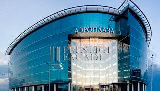

Архитектурные решения
для бизнеса
Стеклоалюминиевые конструкции полноценно вошли в проекты современных зданий и сооружений. Сегодня каждый новый строящийся деловой центр, жилой квартал, автосалон, выставочный комплекс стремится подчеркнуть свою индивидуальность, выделиться из устаревшего многообразия построек крупных городов и административных центров. И это по-настоящему стало возможным за счёт стильного сочетания стекла и алюминия. Алюминий - высокотехнологичный металл, который несет в себе огромный ряд преимуществ. Например таких как легкость, прочность, стойкость к коррозии.А инженерная мысль помогла современным стеклоалюминиевым конструкциям и фасадам стать теплыми и конструктивно неповторимыми.
Здания, которые имеют в своей архитектуре стекло, приобретают индивидуальный характер, а так же наполняют естественным светом все пространства и помещения. Производство стекла шагнуло далеко вперед и сегодня этим необходимо пользоваться. Уникальность оттенков стекла, его структуры, толщины, прочности и безопасности достигло высоких результатов, что позволяет использовать его как полноценную панорамную прозрачную стену, будь то это фасад, витрина или перегородка внутри помещения.
Амбициозно, современно, модно и стильно. Вот ключевые факторы, которые влияют на выбор решений в пользу панорамного остекления фасадов зданий. Большой площадью стеклоалюминиевые конструкции называют витражами, которые активно пользуются популярность в современном строительстве жилых домов в Санкт-Петербурге. Самый важный момент - выбрать качественного и достойного подрядчика, который сумеет оправдать возложенные на него обязательства, грамотно спроектировать, рассчитать и воплотить стекло алюминиевую конструкцию в жизнь.
- Проектирование изготовление и монтаж любых стекло алюминиевых архитектурных элементов.
- Проектирование изготовление и монтаж внутри офисных перегородок цельно стеклянных козырьков.
- Проектирование и установка вентилируемых фасадов зданий из алюминиевых панелей.
- Профессиональный клининг фасадов любой сложности включая высотную мойку.
- Ремонт и обслуживание стекло алюминиевых фасадов.
Prestige Fasade - компания, которая не просто делает свое дело, а с огромным желанием созидает лучшие фасадные произведения строительного ремесла. Это люди, которые любят свое дело и искренне радуются за каждый реализованный проект.
На всех этапах производства работ наши специалисты проводят регулярные проверки, на объектах постоянно присутствуют ответственные лица и соблюдается техника безопасности.